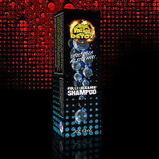

Detox / Cleanses
HIGH VOLTAGE SHAMPOO
High Voltage Folli-Cleanse Shampoo has been formulated to remove toxin related metabolites from the hair shaft. Simply use the night before or the morning you need your hair clean. Effects can last up to 36 hours.
PRODUCT DESCRIPTION
Directions: (Shake Well)
- Wash hair thoroughly with High Voltage Folli-Cleanse Shampoo by using only a quarter of the bottle (25% of the bottle, about .5 oz.) then rinse completely and leave damp.
- Apply the remainder of the bottle (1.50 oz.) of Shampoo and massage thoroughly into hair using only your fingers. Do not brush or comb hair.
- Cover with shower cap and let set for 20 minutes but no more then 30 minutes.
- Rinse thoroughly.
Towel, style or blow dry your hair as usual, but be sure not to use combs, brushes or hair products that may be contaminated by old hair that had exposure to toxins or smoke.
Success Tips and Facts:
- Avoid all unwanted toxins for 24-48 hours prior to using High Voltage Folli-Cleanse Shampoo. (The longer the better!)
- The toxins you are removing from your hair may still be in your body. These toxins are excreted through the skin via perspiration. The perspiration can reabsorb into the hair after the cleansing and re-contaminate the hair. While it’s impossible for you to totally control how much you perspire, do your best to stay cool after using the shampoo to avoid re contamination. Try to stay in an air conditioned environment or one that is not to hot. Again, much of this depends on the situation your in, and may not be totally in your control. But do your best to stay cool!
- People with tight cornrows, French braids, dread locks, heavy afros and oily hair are more at risk for the product not working because of density and difficulty penetrating the scalp, you will need to scrub extra deep into their scalps, it is recommended to wash your hair with your everyday non-conditioning shampoo multiple times the day before using High Voltage Folli-Cleanse Shampoo.
Warning:
Keep out of eyes, discontinue use if you experience skin irritation. Don’t be alarmed if you do experience skin flaking or dryness after use, you may use hair conditioner or treat the dryness but ONLY AFTER you test.
Store in a private place. Keep out of reach of children.
Ingredients: Deionized Water, Ammonium Lauryl Sulfate, TEA – Lauryl Sulfate, Cocamidopropyl Betaine, Cocamide DEA, Sodium Thiosulfate, Tetrasodium EDTA, Glycerin, Citric Acid, DMDM Hydantoin, Iodopropanyl Buylcarbomate and Fragrance.
*Packaging may vary
RETURN & REFUND POLICY
All Sales are FINAL !